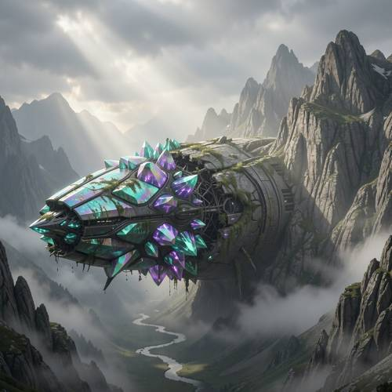
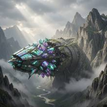
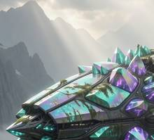
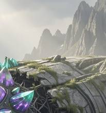

Relationship — The wreckage of a huge alien spacecraft, part of its hull made of exot
The wreckage of a huge alien spacecraft, part of its hull made of exotic metal crystals, and another part blended with ancient rocky mountains.


Judge — Direct
- PASSRelationship - Composition — The image shows a massive, spherical alien spacecraft. A large, damaged section of its hull is clearly composed of numerous large, angular, faceted structures, distinct from the smoother, paneled parts of the hull.
- PASSAttribute - Material — The spacecraft features large, sharp-edged, faceted structures that have a high sheen and reflect light, consistent with the appearance of metallic crystals. Their large scale and integration into a spacecraft hull give them an exotic quality.
- FAILAction - Contact Interaction — The image shows the spacecraft has crashed in a rocky canyon and is positioned directly next to a mountain wall. However, the spacecraft and the rock are visually distinct entities. There is no depiction of the two materials blending, merging, or fusing together.
Judge — Continuum
- PASSRelationship - Composition — The front portion of the alien spacecraft's hull is visibly composed of large, faceted crystalline structures. These crystals are integrated into the main body of the ship, forming a significant part of its external surface.
- PASSAttribute - Material — The front of the spacecraft features large, pointed crystals that are iridescent, showing shades of teal, green, and purple. Their faceted shapes and shiny, colorful surfaces give them an exotic and crystalline appearance, consistent with the prompt's description.
- PASSAction - Contact Interaction — The rear section of the spacecraft is shown lodged against the face of a steep, rocky mountain. The texture of this part of the hull is stone-like and grey, and it is covered with moss and vegetation, making it visually merge with the surrounding mountain environment, thus appearing 'blended' with it.
What the agent did
Thinking
The user wants an image: "The wreckage of a huge alien spaceship, part of the hull made of exotic metal crystals, and another part fused with ancient rocky mountains." Let me generate this image with flux2-klein (per the benchmark policy, I have to use flux2-klein for both generation and editing). Let me write a detailed visual prompt: "The wreckage of a huge alien spaceship, a massive crashed vessel, half of its hull composed of glowing exotic metal crystals—iridescent crystalline structures embedded in the dark metallic plating—while the other half of the wreckage is fused with and buried in ancient rocky mountains, eroded weathered stone, rugged mountain ridges, mist, cinematic composition, epic scale, dramatic lighting, remnants of the ship jutting out from the mountainside, moss and lichen on the crystal surfaces, vast and desolate landscape." Aspect ratio: not specified. The default is 1024x1024. A wide landscape might be more appropriate for this scene, but the benchmark says "the image size is fixed for comparison"—hmm, that's about not expanding the canvas. The default size is what the harness controls. Let me go with the default square, or a 16:10 wide landscape. The prompt says "the size is controlled by the harness"—so I should just use the default and not specify width/height? Actually, it says don't set a seed, and "size and seed are controlled by the harness." So I shouldn't specify width/height. Just generate with the default. Let me generate the first image. Prompt: "The wreckage of a huge alien spaceship fused into ancient rocky mountains: half the hull made of exotic iridescent metal crystals—glowing teal and violet crystalline shards embedded in dark hull plating—while the other half of the massive ship is fused and buried in weathered ancient mountain rock, jagged stone ridges wrapping around the wreckage, mist drifting through the valley, epic cinematic scale, dramatic god rays, moss and lichen, desolate landscape, hyperdetailed, realistic concept art." Then inspect, edit as needed, and mark the best one. Let's do it.
Step 1 — `generate_image`
{
"model": "flux2-klein",
"prompt": "Epic cinematic scene: the wreckage of a huge alien spacecraft. One half of the ship's hull is made of exotic metal crystals \u2014 massive iridescent crystalline structures, teal and violet glowing crystal shards embedded in dark sleek hull plating, refracting light. The other half of the colossal wreck is fused with ancient rocky mountains: weathered jagged stone ridges and eroded cliff faces blending into the ship, rock and metal growing together, ancient lichen and moss on the crystals. The wreck sprawls across a misty mountain valley, epic scale, dramatic god rays through fog, desolate and awe-inspiring, highly detailed realistic concept art."
}Result img_0

Thinking
The image is very good. Let me check: the wreckage of a giant alien spaceship ✓, part of the hull made of exotic metal crystals (the front half is a teal/violet crystal) ✓, another part fused with the ancient rocky mountains (the rear is fused with the rocky mountain) ✓. Critique: this actually looks pretty good. The ship looks somewhat "floating," but it's embedded in the mountainside. One could argue it looks a bit more like an intact spaceship with crystals rather than "wreckage," but it's clearly embedded in the mountain, and there's some damage too. The prompt says "wreckage" — the image shows the ship fused with the mountains, which is consistent with the description "another part is fused with the ancient rocky mountains." The crystal part and the mountain-fused part are clearly distinguished. Let me zoom in to check the details and confirm there are no artifacts. Let me inspect the crystal hull and the rock junction sections.
Model
The first generation looks strong. Let me inspect the key regions at full resolution to verify the crystal hull and the rock-blended section before deciding whether to edit.
Step 2 — `inspect_region`
{
"image": "img_0",
"roi": [
60,
240,
480,
620
]
}Result img_1

Step 3 — `inspect_region`
{
"image": "img_0",
"roi": [
420,
200,
720,
520
]
}Result img_2

Thinking
Both regions look great: 1. The crystal hull is beautifully detailed — iridescent teal/violet crystals embedded in dark plating, with moss growing on them. 2. The rock-blended section: the ship's hull transitions into ancient, weathered rocky cliffs with moss — really looks "fused with" the mountain. The image satisfies all the elements of the prompt: - Wreckage of a giant alien spaceship ✓ - Part of the hull made of exotic metal crystals ✓ - Another part fused with ancient rocky mountains ✓ The image is in good shape. The ship is embedded in the mountainside, with mist, god rays, and epic scale. This is a good result. Mark it as the best and stop — good enough is the stopping condition. Actually, is there anything clearly wrong? The ship looks a bit like a spaceship that's "intact" rather than "wreckage," but it's clearly fused into the mountain, damaged and covered in moss, and the crystal part is jutting out of the rock. The description of "fused with ancient rocky mountains" is the user's own wording, and the image matches it well. No edit needed. Mark img_0 as the best.
Model
Both regions check out at full resolution: the crystal section shows well-formed iridescent teal/violet crystal shards embedded in dark hull plating with moss growth, and the rear section shows the hull genuinely transitioning into weathered ancient rock — the blending reads clearly. All the elements of the prompt are present: a massive alien spaceship wreckage, an exotic crystal hull on one part, and the other part fused into an ancient rocky mountain. The scene is epic and consistent, with no artifacts that would be worth risking drift over in an edit.
Step 4 — `mark_best`
{
"image": "img_0",
"reason": "Meets all prompt elements: huge alien spacecraft wreck, iridescent exotic crystal hull on one half, the other half visibly fused with ancient rocky mountains; verified in full-res crops, no artifacts."
}Thinking
Marked. Final state: img_0 is marked as the best, and no edits have been made after that. Done. I'll give the user a brief summary.
Model
Done. The final image (marked as best) shows the wreckage of a colossal alien spacecraft: its forward hull is encrusted in exotic iridescent metal crystals — teal and violet shards refracting light through the mist — while the rear of the wreck is fused into ancient rocky mountains, with weathered stone ridges growing seamlessly out of the hull and moss and lichen bridging the two materials. The scene sits in a fog-filled valley with god rays cutting through the clouds for epic scale. Verified at full resolution: the crystal geometry and the rock-blend transition both hold up cleanly, so no further edits were needed.